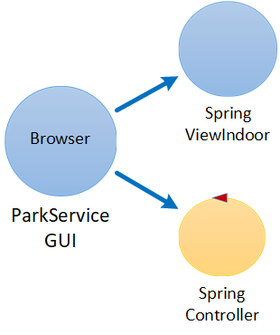
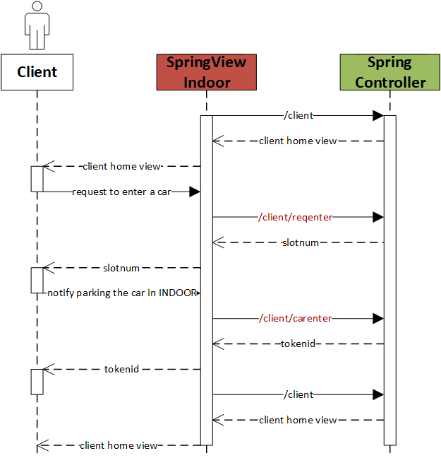
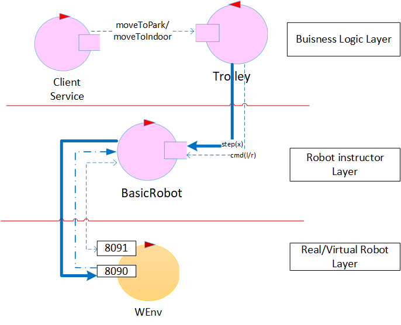

Introduction
Hereafter we report a copy of the sprint backlog for this specific sprint:
Sprint1 backlog
This sprint is relative to the POR
informIN, divided into F3, F4, F5, F6, F17, NF1, NF2, NF3, NF7 by the analysts.
| Must Have |
Should Have |
Could Have |
The client must be informed if no parking slots are available at the time of his request (F3)
The ParkManagerService must successfully instruct the robot on how to move; in particular, the robot must be moved from the INDOOR AREA to one of the Parking Slots (F5)
A unique token must be successfully generated and presented to the client (F6)
The system must aknowledge from the client when the car is in the INDOOR area and double-check this fact through the weight sensor(F4-F17)
|
The map should be updated with the movements of the robot (NF2)
The robot should not walk over the parking slots (NF3)
The robot should correctly return to the home position if idle (NF7)
|
The ParkServiceGUI is supposed to show a prompt for the client to interact with to notify to the system that the car has been placed in the INDOOR area (F4)
The token is supposed to be unique and unforgeable (NF1) |
This sprint should be done in
one week.
Project
Starting from the
logic architecture derived during the analysis phase, let's now "zoom-in" into
the components we have to design for this sprint: ParkServiceGUI, ParkManagerService, Trolley, Map and WeightSensorController and simulator.
ParkServiceGUI
Good programming practice is the single responsibility principle, which advises us to design components with one logical purpose. To fulfill this principle, we need separation from application and presentation layers. We also need separation from
the buisness logic, the presenting view and the code that prepares these views.
Accepting the hint of the analysts to use a MVC pattern to implement the GUIs and user interactions, we decided to utilize the Spring Framework to fulfill this task.
Using the Spring Framework to implement a MVC pattern
The Spring Framework will be used for its ability to boost productivity with the use of annotations, Dependency Injection and easily configurable web services
and for the need to focus on buisness code, leaving the generation and management of boilerplate code to the Framework.
The new "ParkServiceGui", at this point, will be split in two components: a spring view (deployable on the client side, in the actual INDOOR area) and a sprint controller to generate the views basing on the client requests. This would also allow to delegate the
real buisness logic to the ParkClientService component, which will be described later.
|

|
Using RESTful APIs for the M2M interaction
We decided to use HTTP RESTful APIs, as they're a "de-facto" standard in API developing and for their flexibility, scalability and lightness, both on the developing side (no
need to import any other libraries as REST works on HTTP) and the deploying side. Moreover, a client-server architecture with a request/response pattern
seemed best for this part of the system, as the required behaviour (described in the attached Sequence Diagram) naturally tends to this approach.
A detailed documentation of the proposed APIs is found here. The API documentation has been redacted using the swagger-editor tool. This was important as the resulting json file
(written in an OpenAPI format) can be reuploaded into swagger to automatically generate some code either to send requests using this APIs (look at this readme file to have an example of bash client) or to generate a server in numerous programming languages.
|

|
ParkClientService
The ParkClientService as a Moore's Finite State Machine
The ParkClientService is the component that contains all the buisness logic in this system use case. It will be implemented as an actor, because we need a componenent capable of accepting and queuing different requests in a non-blocking manner and to
communicate and behave with a message-based strategy. In this way we can also exploit the qak infrastructure and language, implementing the service as a FSM, whose state changes are triggered by events and messages.
The FSM Diagram attached describes the service states and the behaviour of the one which are of interest for this sprint. The diagram was designed basing on the ParkClientService designed and developed for the First Executable Model (parkingArea.qak) of the system.
|
|
Interaction
The ParkClientService will communicate with the SpringController using a request/response pattern, over TCP sessions, using the connQakTcp.kt
class with the help of the MsgUtil.kt utility class to build qak-understandable requests.
Instead, the service will communicate with the Trolley using dispatches, a fire-and-forget pattern and once again over TCP sessions and exploiting the MsgUtil.kt utility class.
Dispatches and fire-and-forget pattern are preferred over a request/response one because, in this case, the ClientService doesn't need an answer from the Trolley on how the moves of the actual robot ended, as the Trolley itself will take care of possible complications on that side. Moreover, there is no need to
require the Trolley to stop his tasks or let other queued tasks wait to respond to the service as it will be implemented as a CoAP-observable resource, thus these information could be presented to the service in a non-blocking manner.
The high-level messages exchanged between these three components are the same as the one identified in the First Executable Model of the system.
Another class, named Message.kt, has been introduced for an internal representation of the response of the ClientService, adding to the message content an id that quickly represent the state of the request (much alike a http response status).
|
|
State representation
As pointed out during the analysis phase, some sort of internal state must be mainteined by the service: we decided to save the parking slots state (free/engaged) internally, in a map, whose key represents the SLOTNUM of the parking slot, and empty value in case the slot is free or the TOKENID associated to the parked car if engaged.
We also decided to save this information in a binary file, to be read at the system startup, to reintegrate the system state in case of a service failure.
The TOKENID has been modeled in this way (as suggested in the analysis phase):
/*
* This solution presents the SLOTNUM as first argument to be easily parsed and
* attaches to it the date and time of the car enter request to make it unique
*/
<SLOTNUM>-dd/MM/yyyy-hh:mm:ss
WeightSensor
The need of a Sensor Interface
Differently from what identified in the analysis phase, we thought that the WeightSensorController could rather be replaced by a WeightSensorInterface. The goal of an object that implements
this interface will be to communicate with a weight sensor (or a mock). The need for an interface derives from our will to introduce abstraction as much as possible, so that if the physical sensor (or mock) changes, a new object
that implements the interface could be introduced, whose implementation corresponds to the one needed by the sensor.
|
|
In our case, the
CoapWeightSensor is a plain object that communicates with a
WeightSensorMock. As a sensor is a constraint device, we
thought that the CoAP protocol could be the best fit for our requirements. Moreover, the communication will be based on a request/response pattern, using a polling strategy.
This can be done without problems as our requirements say that we should check the weight sensor data only after the client states that a car has been placed in the INDOOR area.
This defines a specific moment when a request should be fired to the weight sensor, for which a polling strategy is the best option.
Trolley
The last component to be designed in this sprint is the Trolley. Once again, the Trolley component identified in the logic architecture by the analysts has been divided into two components, to grant reusability and independence between implementations and buisness logic:
the Trolley actor and the BasicRobot actor.
Trolley buisness logic and Trolley instructor
The TROLLEY component identified during the analysis phase has been actually split into a "Trolley" actor, that helds the buisness logic for the trolley (the states and the rules on how to switch between them as well as preparing a path for the robot to perform) and a "BasicRobot" that instructs the robot on how to move.
Once again we want to exploit the qak metamodel and architecture to develop the Trolley and for the BasicRobot, which is already developed and ready to use. This last component will grant the technology indipendece we wanted:
as described in the "configuration file" section of basicrobot2021.html, this component
can be easily configured (via a json configuration file) to work with the WEnv virtual robot as well as a variety of real robots deployed on different systems (such as Raspberry Pis or Arduinos).
|
|
A layered architecture for the Trolley
We cannot stress enough the need for a layered architecture in the designing of this component: as a matter of fact, such architecture will insure high reusability and independence between both components and technologies,
so that if one wants to change the actual virtual robot implementation or introduce a real robot or the designers want to reuse some of the hereby developed components, this can be done with 0 to little effort.
The Trolley is developed after the Trolley QActor, which is part of the First Executable Model of the system (parkingArea.qak) and holds the trolley states and rules for the state changes, as well as
the code to instruct the BasicRobot to create the sequence of moves to be passed to the virtual robot to perform. Thanks to the developed architecture, if one wants to change the behaviour of the system, the way the trolley changes state, the communication pattern between the trolley and the basic robot/ClientService, or the actual implementation of the robot, only one component
at a time should be subject to change, lowering the risk of system failures due to the change.
|

|
Instruct the robot trough a Planner
As correctly stated by the analysts, the BasicRobot component ability to move by "steps" is crucial to our needs in the sense that, in this way, we can monitor the robot's movement easily.
The only thing to consider, now, is how to make the BasicRobot work with a map of the area so that the virtual robot correctly follows the requirements (e.g. NF2, NF3, etc.) and how to
send the correct sequence of moves from the Trolley actor to the BasicRobot.
The attached figure shows our solution to the problem: the introduction of a Planner (modelled after the PlannerUtil.kt class)
and of a Room Map (modelled after the RoomMap.kt class).
The Planner component will use the aima framework to search for a path in the Room Map,
after the Trolley actor specifies a goal as a couple of integers (identifying a cell of the map), and will return the path as a sequence of moves which both the BasicRobot and virtual WEnv robot can understand (see the aril language).
By considering the parking slots as "obstacles" in the RoomMap, the PlannerUtil class insures us that no path will be computed where the trolley goes on top of the parking slots, as per NF3. Moreover the plannerUtil class already offers a method to update the RoomMap with the position of the robot after every move has been completed (NF2)
In case of failure, the trolley should be led to the home position to restart the service, as the planner would reinitialize the AI used for the path search using the (0,0) position for the robot.
|
|
Testing
To exploit the qak CoAP observable resources for testing purposes, as already done during the
first test plans of the analysis phase
, the
CoapObserverForTesting.kt has been reintroduced in this sprint tests.
For all the tests we assumed these starting conditions:
- The trolley cannot be stopped by the manager in this sprint
- The INDOOR is not engaged
- The OUTDOOR is not relevant for this sprint
- All the parking slots are free
These conditions were individually changed by the single tests if they needed some other context, as described below.
We decided to implement the tests relative to this sprint under two test classes: one that holds tests concerning the WeightSensor, the ParkClientService and the SpringController (
Sprint1ParkingAreaTests.kt)
and one that holds tests concerning the Trolley, BasicRobot, ParkClientService and the SpringController (
Sprint1TrolleyTests.kt), in order to fire tests without having to start up every qak context if not needed for the current test.
Hereafter is a description of the functional tests for this
sprint requirements:
- Test if there are no parking slots available, a proper response is returned by the SpringController (e.g. {slotnum:0}), as per F3
- Test if the service can handle a carenter request from a client (e.g. notifies the robot to pick up the car in the INDOOR area), as per F4 and after the client sends a carenter request (e.g. when he notifies the system to have parked the car in the INDOOR area) test
if the service can double check this information with the weight sensor, as per F17
- Test if the service correctly instruct the trolley on where to go (e.g. sends the moveToIndoor to pickup a car from the INDOOR area and then the moveToPark to move it to the right parking slot) and that the trolley actually sends the right commands to the BasicRobot after obtaining the path from the PlannerUtil, by checking the robot position on the map at the end of each trip, as per F5
- Test if the service correctly generates the TOKENID when a carenter request is completed and that it correctly sends it back to the controller, as per F6
Sprint Summary
The coming figure represents the final outline resulting from the Sprint1. The dashed lines that group components together gives a glance of the physical deployment organization
|
Summary table
{kind=link}